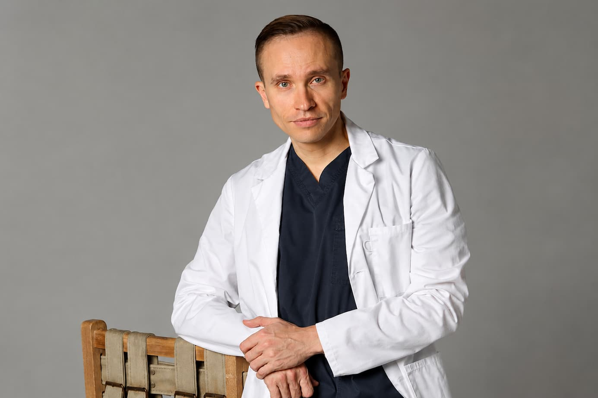
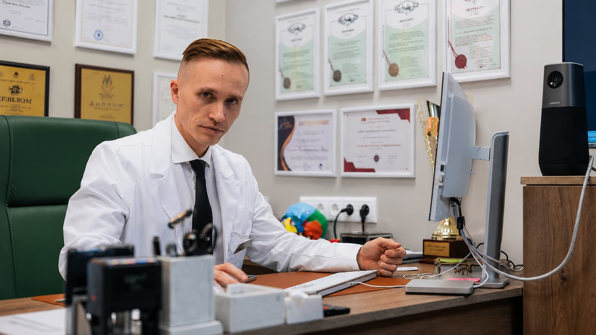
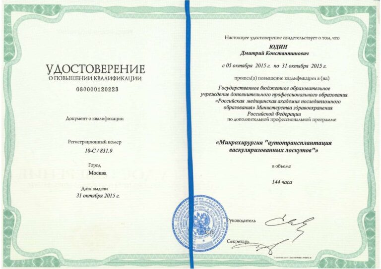
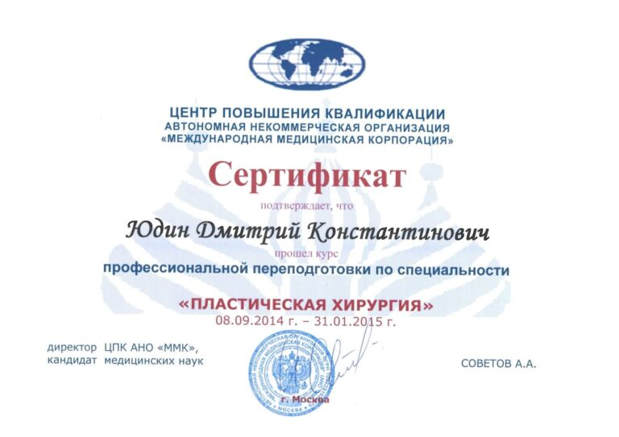

Связь симптомов
Жалобы рассматриваются вместе с состоянием сустава, мышц, зубных рядов и нервной системы.
Beyond maxillofacial joint occlusion
BMJO объединяет данные о суставе, прикусе, мышцах и нервной системе в единую клиническую картину. На ее основе формируется маршрут диагностики, лечения и реабилитации.
Информация о медицинских услугах, стоимости и записи размещена на сайте Клиники Юдина.

Почему появился BMJO
Боль, щелчки, ограничение движений и изменение прикуса могут быть связаны с несколькими факторами. BMJO помогает сопоставить симптомы и результаты исследований в одной системе.
Жалобы рассматриваются вместе с состоянием сустава, мышц, зубных рядов и нервной системы.
Гнатолог, хирург, ортопед, невролог и реабилитолог согласуют клинические решения.
МРТ, КЛКТ, цифровое сканирование, ЭМГ и клинический осмотр интерпретируются во взаимосвязи.
Единая клиническая система
Положение диска, структура и функция ВНЧС.
Контакты зубов и положение нижней челюсти.
Тонус, координация и перегрузка жевательной системы.
Чувствительность, боль и функция лицевого нерва.
Адаптация, восстановление функции и контроль динамики.
Логика BMJO
Жалобы, анамнез, осмотр и исследования.
Увидеть связи и противоречия между данными.
Определить ведущие факторы и ограничения.
Согласовать последовательность вмешательств.
Проверять объективную и субъективную динамику.

Автор концепции
Главный врач Клиники Юдина, эксперт по патологии лица и ВНЧС.
Подход доктора Юдина объединяет стоматологию, гнатологию, неврологию, челюстно-лицевую хирургию и восстановительную медицину.
Доказательная часть
В каждом случае показаны основания выбора тактики, контрольные точки и зафиксированная динамика.

Комплексная диагностика, разгрузка, реабилитация.

Оценка нерва, физиотерапия, контроль восстановления.

Междисциплинарный маршрут и стабилизация состояния.
Документы
В финальной версии каждый документ получает название, дату, тип, миниатюру, полноразмерный файл и доступный alt-текст.



Консультация
Оставьте контакты на BMJO. Письмо поступит администратору. Запись также доступна на сайте Клиники Юдина.